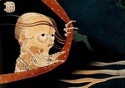

En el budismo japonés, los jikininki (食人鬼 fantasmas comedores de hombres) son los espíritus de los humanos avariciosos, egoístas o impíos que son malditos después de la muerte para buscar y comer cadáveres humanos. Llevan a cabo tales actos durante la noche, en la procura de cuerpos muertos recientes y ofrendas de comida dejadas para los muertos. Algunas veces, también saquean los cuerpos que comen para encontrar objetos de valor que usan para sobornar a oficiales locales a cambio de que los dejen en paz.
Salen a merodear por las noches para profanar las tumbas y alimentarse de cadáveres. Son zombis, es decir muertos vivos. A menudo, se dicen que los jikininki se parecen a cadáveres en descomposición, quizás con algunas marcas no humanas como garras afiladas u ojos brillantes. Son una terrible visión, y cualquier humano que vea uno quedará congelado por el miedo. De cualquier manera, bastantes historias les dan la habilidad de disfrazarse mágicamente como un ser humano normal y hasta llevar "vidas" normales durante el día.
La leyenda de los jikininki se origina en las antiguas tradiciones budistas japonesas. Se cree que estos espíritus son el resultado de malas acciones realizadas en vida, como la avaricia extrema y el egoísmo. Después de la muerte, estos individuos son condenados a una existencia de insaciable hambre por carne humana.
Una de las historias más conocidas sobre jikininki es la del monje Muso Kokushi. En su viaje, Muso pasó la noche en un pequeño pueblo donde fue testigo de los rituales funerarios locales. Durante la noche, vio a un jikininki devorando el cuerpo del difunto. Al confrontar al espíritu, este confesó ser el antiguo sacerdote del pueblo, condenado a su forma actual por su codicia en vida.
Los jikininki han aparecido en varias formas de medios japoneses, incluyendo películas, series de televisión y literatura. Su representación varía, pero comúnmente se les muestra como entidades grotescas y aterradoras que reflejan los temores humanos sobre la muerte y la corrupción.
En la mitología japonesa, los jikininki simbolizan las consecuencias de la avaricia y la falta de compasión. Sirven como advertencia sobre los peligros de vivir una vida egoísta y sin consideración por los demás. Además, reflejan el temor a la descomposición y la pérdida de la humanidad después de la muerte.